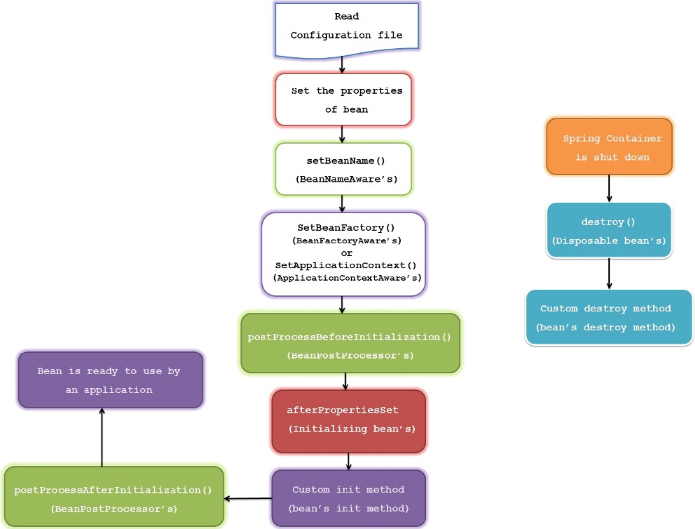

Bean 的生命周期
译自 —— Spring Bean Life Cycle
Bean 的生命周期是 Spring 最重要的特性之一。
在许多应用中，必须在初始化bean之前执行一些操作，并且在容器销毁 bean 之前执行一些清理操作。
在 Java 中 对象的生命周期 由 new 关键字开始。当我们使用 new 创建一个对象时，它会根据类的层析结构调用一系列的构造函数，最后使对象可用。当这个对象没有任何引用时，它将被垃圾收集。 这是Java中对象的生命周期。
但在 Spring 中 Bean 的生命周期还有很多事情要做。下面展示的是 Spring Bean 的生命周期图：

- Spring容器在 xml配置文件中(注解扫描、配置Bean 等) 查找bean的定义
- 通过调用 Class 的默认 无参数构造函数 来实例化 Bean；如果类中只有参数化构造函数，则必须在使用构造函数注入定义bean，否则将抛出bean创建异常。
- Spring 将 值 或者 引用 注入到 Bean 的实例中
- 如果 Bean 实现
BeanNameAware接口，Spring 会将 bean的ID 传递给setBeanName()方法并执行此方法。 - 如果 Bean 实现
BeanFactoryAware接口，Spring 将会调用setBeanFactory()方法，传入 Bean 工厂BeanFactory的实例 - 如果 Bean 实现
ApplicationContextAware接口，Spring 将会调用setApplicationContext()方法，创建当前应用上下问的引用ApplicationContext - 如果 Bean 实现
BeanPostProcessor接口，Spring 将会调用postProcessBeforeInitialization()方法；@PostConstruct注解的方法也会在这一步执行 - 如果 Bean 实现
InitializingBean接口，Spring 将会 在设置完 Bean 的所有属性后 调用afterPropertiesSet()方法；类似地，如果使用init-method方法声明bean，则将调用指定的初始化方法 - 如果 Bean 实现
BeanPostProcessor接口，Spring 将会调用postProcessAfterInitialization()方法， - 此时，bean已准备好由应用程序使用，并将保留在应用程序上下文中，直到销毁应用程序上下文。
- 如果 Bean 实现
DisposableBean接口，Spring 将会在容器销毁的时候 调用destroy()方法；同样，如果使用destroy-method声明任何bean，则将调用指定的方法。
生命周期之前
- 容器启动时最先调用
org.springframework.beans.factory.config.BeanFactoryPostProcessor#postProcessBeanFactory(ConfigurableListableBeanFactory beanFactory) - …
@See
org.springframework.beans.factory.support.AbstractAutowireCapableBeanFactory#initializeBean